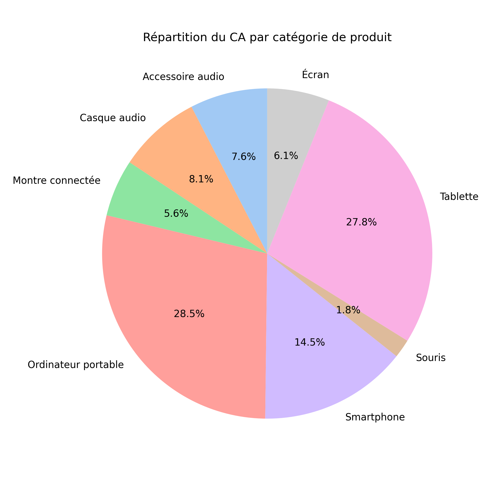
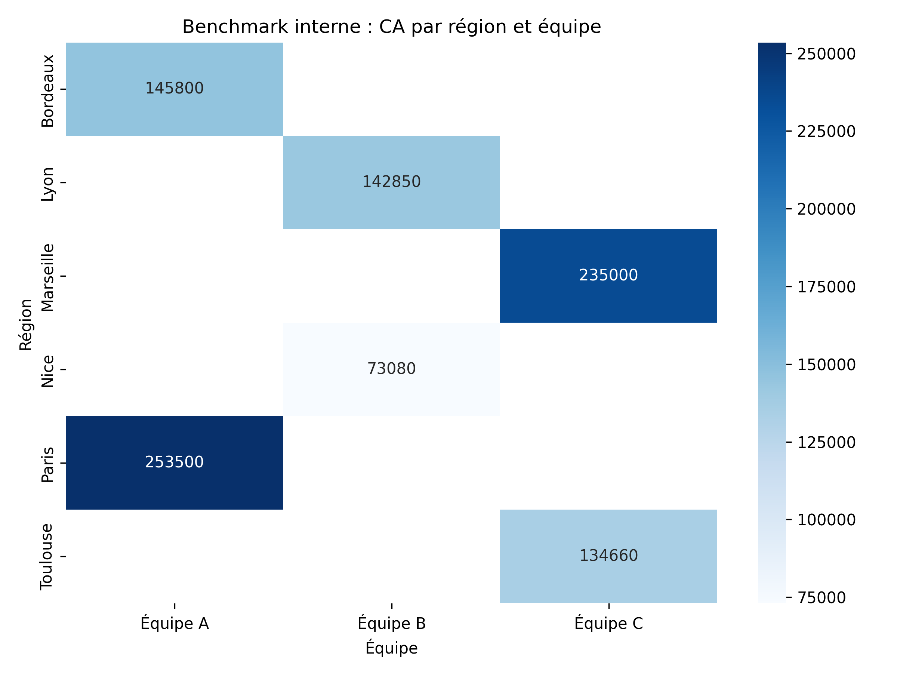

Étude 01
Analyse de performance commerciale et stratégie produit — Secteur numérique
Évaluation des performances des ventes dans le secteur numérique afin de proposer des actions concrètes pour améliorer la rentabilité et la couverture du marché.


